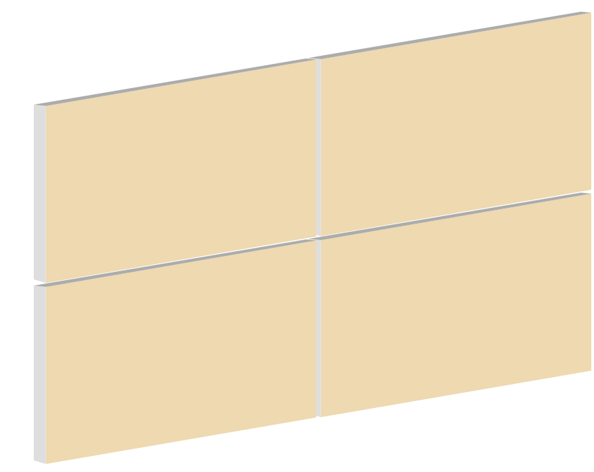
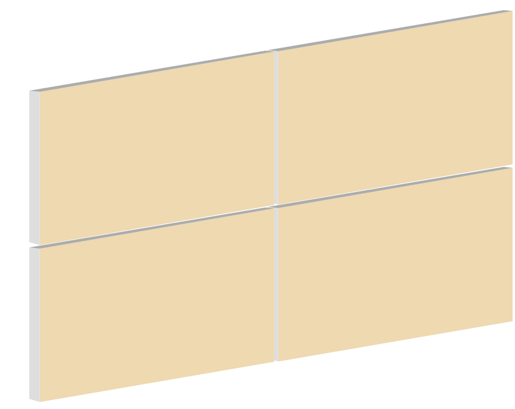

с чего начать?
Для поклейки плитки подходит любая стена. Примерный вес бетонной плитки под кирпич 20 кг/кв.м, а фасадного камня 40 кг/кв.м
Посчитайте общую площадь стен под облицовку плиткой. Кути считаются отдельно. Каждый угол нужно померять в высоту - в погонных метрах.
Помните, что примерно 5-10% плитки уйдет на подрезку по краям стен.
монтируем утеплитель
Бетонную плитку можно клеить на утеплитель: минеральная вата, стиродур (пенополистерол), пенопласт или другое. Если ваш дом будет утеплён "минватой" стену необходимо поштукатурить.
наносим грунтовку
Рекомендуем использовать грунтовку глубокого проникновения.

Грунтувать поверхность нужно непосредственно в день либо за день до монтажа.Если возле стены проводились строительные работы с сухими смесями (пыльными) в этих местах адгезия стены может ухудшиться.
закрепляем монтажную сетку
Для того, чтобы плитка не отпадала и долго служила, на стену нужно набить армирующую сетку. Возможно использовать металлическую сетку (толщина от 2мм, ячейка 1х1 см), либо капроновую сетку (плотностью не менее 160 г/кв.м). Капроновая сетка не деформируется под воздействием температуры, в отличии от металической сетки.

Сетка должна быть в основе клея вместе с цементным клеем создавая каркас.Сетку необходимо монтировать "захлёст", чтобы на месте стыка сетки со временем не образовывались трещины.
закрепляем сетку к стене
Монтажная сетка монтируется дюбелями со шляпками к опорной стене. Эта гарантирует, что плитка вместе со слоем клея не начнем отпадать от стены в случае если в каком-то месте адгезия ухудшилась (из-за усадки дома, либо других причин).
наносим клей
Рекомендуем использовать моростостойкий клей для камня Ceresit СМ-117 либо аналогичный. Расход клея составляет 3-4 кг/кв.м в зависимости от ровности стены и толщины слоя клея.
Клей должен быть свежим. Бумажные мешки с сухой смесью должны быть в отличном состоянии, без повреждений.Если мешок намок, либо был порват - адгезия клея ухудшится, а плитка со временем может начать отпадать.
клеим плитку к стене
Перерд монтажем плитки, необходимо разложить небольшое количество плитки и проследить, чтобы плитка по цветам была выложена хаотично. Лучше всего использовать плитку из разных упаковок. Оптимальная температура для монтажа плитки 10-25 градусов тепла.Если на улице сухая и жаркая погода, советуем перед монтажом несколько намочить плитку (окунуть в емкость с водой), чтобы плитка после поклейки не вытягивала воду из клея, что в свою очередь может ухудшить адгезию.
Наша плитка декоративный материал, которая воссоздает кирпичную кладку. В некоторых коллекциях даже предусмотрен разный размер плиток из упаковки. По-этому класть плитку идеально ровно не нужно. Но контролируйте, чтобы плитка была выложенаровно относительно горизонтальных направляющих (чтобы шов не был сформирован на стене волной, если смотреть на него со стороны). Используйте для этого лазерный уровень, либо шнур натянутый по горизонтали как указатель.
Резать плитку нужно болгаркой по тыльной стороне плитки (сзади).Подрезанная плитка бросается в глаза, старайтесь избегать подрезки, например, уменьшая/увеличивая размер шва на 1-2 мм. Перед поклейкой, сделайте примерку: разложите 1 ряд плитки от угла к углу, и и выбирете наилучший вариант.Если плитка во время монтажа запачкалась клеем или затиркой, расстворители для очистки использовать нельзя!Дайте загрязнителю слегка схватиться, и просто счистите клей/затирку капроновой счеткой.
затираем швы
Затирку можно наносить 2-мя способами, в зависимости от ее вида. Обычная затирка, предварительно замешаную в ведре до консистенции сметаны, наносят непосредственно в шов со строительного пистолета.
Полусухая затирка (рыхлой консистенции, напоминает несколько влажный песок) вдавливают в шов специальной кельмой для клинкерной плитки (маленький шпатель з рабочей поверхностью шириной до 1 см).
Затирку (фугу), особенно темных цветов, необходимо замешивать несколько раз, в соответствии с рекомендациями производителя.Если затирку качественно не замешать, после высыхания на поверхности могут появиться белые разводы.
После нанесения затирки на небольшую площадь, шов выравнивается кельмой для расшивки швов (либо куском толстого кабеля, либо пальцем в полиэтилене), формируя между плитками полукруглую выемку.


Лишки затирки аккуратно відтираються від плитки капроновою щіткою.
Також зверніть увагу, що вибір кольору затирки є надзвичайно важливим. Від кольору затирки залежить кольорове сприйняття плитки: якщо затирка темна, то колір плитки буде здаватись більш тьмяним, не насиченим. І навпаки, якщо затирка світла, то плитка буде на вигляд більш яскравішою, контрастною.

Більше рекомендацій щодо видів цегляної кладки, як класти плитку на відкосах чи вікнах, та інше за посиланням.
наносимо на плитку захисне покриття
Фарбники плитки не вигоряють на сонці. Але можуть з часом вимиватись. Тому, для довготривалого збереження кольору плитку потрібно покрити або акриловим лаком (на водній основі) для фасадних робіт, або гідрофобізатором для бетону.
Покриття наноситься мінімум через тиждень після монтажу, та через 2-3 доби після дощу.В клеї та затирці є вода, яка через плитку має вийти назовні. По рекомендаціям виробників клею, повний цикл висихання клею на цементній основі становить близько 1 тижня. Якщо плитку покривати одразу після монтажу, і не дати воді випаруватись, з часом на плитці подекуди можуть з'явитись білі висоли.
Якщо дотримуватись цих рекомендацій, гарантія на колір плитки становить 20 років.